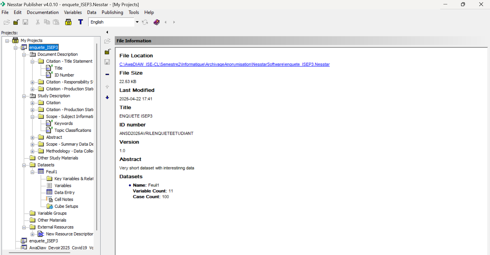

Bienvenue aux notes techniques du TP
Ce site présente les notes techniques détaillées pour vous guider à travers le TP d'Anonymisation et d'Archivage.
Ce travail a été réalisé par Khadidiatou Coulibaly, Hildegarde Edima Biyenda, Ameth Faye, Awa Diaw, Khadidiatou Diakhaté, Ange Emilson Rayan Raherinasolo, Tamsir Ndong et Alioune Abdou Salam Kane, élèves en ISE1 cycle long
Utilisez la navigation pour accéder aux différentes sections ou la fonction de recherche pour trouver rapidement une information spécifique.
À propos de ce TP
Ce travail pratique s'inscrit dans le cadre du cours sur l'anonymisation et l'archivage des données dispensé par M. MANE. Il vise à familiariser les étudiants avec deux outils professionnels : NADA, un portail web de diffusion de microdonnées, et Nesstar Publisher, un logiciel de production documentaire au format DDI XML.
Schéma synthétique du processus
- Installer WAMP
- Télécharger/déployer NADA
- Créer base MySQL vide (nada)
- Configurer le fichier database.php
- Lancer NADA (Install Database)
- Préparer enquête dans Nesstar Publisher
- Exporter DDI XML + fichiers
- Importer dans NADA (admin panel)
- Portail consultable avec enquêtes archivées
Introduction
Ce travail pratique s'inscrit dans le cadre du cours sur l'anonymisation et l'archivage des données. Il vise à familiariser les étudiants avec deux outils professionnels : NADA, un portail web de diffusion de microdonnées, et Nesstar Publisher, un logiciel de production documentaire au format DDI XML.
Objectifs du TP
- Mettre en place localement une plateforme NADA (National Data Archive) pour la documentation, la diffusion et l'archivage d'enquêtes statistiques.
- Préparer les métadonnées des enquêtes à l'aide de Nesstar Publisher au format DDI XML.
- Importer ces métadonnées et fichiers associés dans le portail NADA pour obtenir un catalogue d'enquêtes consultable en ligne.
Partie 1 : Préparation de l'environnement local
1. Installation de WAMP Server
NADA étant une application PHP, il requiert un environnement serveur incluant Apache, PHP et MySQL.
- Télécharger WAMP depuis https://www.wampserver.com/
- Lancer l'installation avec les paramètres par défaut.
- Vérifier que le serveur est en marche (icône verte) dans la barre des tâches.
2. Téléchargement et déploiement de NADA
- Aller sur le site officiel https://nada.ihsn.org
Prendre la version stable : 5.4.1 - Télécharger le fichier Source code.zip.
- Décompresser ce fichier.
- Copier le dossier décompressé dans :
C:\wamp64\www\ (ou htdocs si vous utilisez XAMPP). - Renommer ce dossier en nada.
3. Création d'une base de données vide
Ici, il s'agit de fournir à NADA une base MySQL dans laquelle il pourra installer ses propres tables.
Étapes :
- Aller sur http://localhost/phpmyadmin
- Se connecter (utilisateur : root, mot de passe vide par défaut).
- Créer une base de données appelée nada, avec le collationnement utf8_general_ci.
4. Configuration de NADA
Le but est de connecter NADA à la base de données créée.
Étapes :
- Aller dans le dossier :
C:\wamp64\www\nada\application\config - Faire une copie du fichier database.sample.php → la nommer database.php.
- Ouvrir database.php dans Visual Studio Code.
- Modifier les lignes surlignées :
$db['default'] = array(
'hostname' => 'localhost',
'username' => 'root',
'password' => '',
'database' => 'nada',
'dbdriver' => 'mysqli',
...
);- Enregistrer les modifications.
5. Lancement initial de NADA et création des tables
Étapes :
- Ouvrir un navigateur et aller à :
http://localhost/nada - Une page s'affiche, détecte l'absence de tables et propose un bouton "Install Database".
- Cliquer sur ce bouton.
- Ensuite, remplir le formulaire de création d'un compte administrateur (nom, email, mot de passe).
- Valider pour terminer l'installation.
Résultat :
- Les tables surveys, variables, resources, etc. sont automatiquement créées dans la base nada.
Partie 2 : Production documentaire avec Nesstar Publisher
Pourquoi utiliser Nesstar Publisher ?
Parce que NADA ne produit pas de documentation : il lit des fichiers produits en amont DDI XML, qui sont :
- des fichiers de description d'enquêtes au format standard international DDI (Data Documentation Initiative),
- générés via un outil comme Nesstar Publisher.
Étapes avec Nesstar Publisher
- Ouvrir Nesstar Publisher.
- Créer une nouvelle étude : File → New Study.
- Remplir les onglets :
- Study Description : titre, objectifs, résumé.
- Methodology : mode de collecte, couverture.
- Data Files : ajout des fichiers (.dta, .csv, etc.).
- Variables : description des variables clés.
- Ajouter les documents (rapport PDF, questionnaire scanné...).
- Exporter le projet :
- Menu : File → Export → DDI
- Cela génère un fichier .xml (ex: my_survey.xml) + les documents associés.
Interface de Nesstar Publisher
Dans notre cas, nous avons utilisé les informations renseignées concernant l’enquête « Suivi de l'impact de la Covid 19 sur les unités du secteur informel (2020) » de l’ANSD. La base ainsi que sa documentation sont disponibles à l’adresse suivante : https://anads.ansd.sn/index.php/catalog/310/study-description
Nesstar Publisher en détails
C'est un logiciel développé par le Norwegian Social Science Data Services (NSD) pour documenter des enquêtes statistiques selon le standard DDI.
Fonctionnalités :
- Saisie des informations méthodologiques d'une enquête.
- Description des fichiers de données et des variables.
- Ajout de ressources : questionnaires, manuels, rapports.
- Export en format DDI XML (compatible avec NADA, Redatam, etc.).
Dans le TP :
- On utilise Nesstar Publisher pour créer la description complète d'une enquête.
- Une fois terminée, on exporte cette documentation → fichier .xml prêt pour NADA.
Partie 3 : Intégration dans le portail NADA
- Aller à http://localhost/nada/admin
- Se connecter avec les identifiants administrateur.
- Dans le menu principal :
- Aller dans Surveys → Import Survey.
- Choisir l'option "Upload DDI".
- Sélectionner le fichier XML généré par Nesstar.
- Aller dans l'onglet Resources :
- Ajouter les fichiers de données (.dta, .csv...),
- Ajouter les documents PDF (rapport, questionnaire).
- Valider l'importation.
L'enquête est maintenant accessible et visible dans le catalogue NADA.
À l'issue du TP, le portail contient :
| Élément | État |
|---|---|
| Portail NADA | Fonctionnel en local |
| Base de données | Initialisée avec les tables |
| Interface administrateur | Accessible |
| Enquête importée | Visible dans le catalogue |
| Métadonnées en format DDI | Correctement interprétées |
| Fichiers joints (PDF, .dta) | Téléchargeables |
À retenir !
Focus sur NADA
NADA (National Data Archive) est une plateforme web de diffusion des données statistiques. Elle permet aux utilisateurs de parcourir, rechercher, consulter, et télécharger des enquêtes documentées.
Mais NADA ne sert PAS à produire de la documentation.
Il affiche les enquêtes déjà documentées dans un fichier DDI XML.
Dans le TP :
- On installe NADA localement via WAMP.
- On importe les fichiers .xml produits ailleurs (avec Nesstar).
- NADA lit ces fichiers et les présente en ligne avec interface conviviale.
Analogie :
- NADA = bibliothèque numérique (vitrine)
- DDI XML = livres déjà écrits (contenu)
- Nesstar Publisher = auteur/éditeur du contenu
Conclusion
Ce travail pratique nous a permis de mettre en œuvre une chaîne complète de valorisation des données d'enquête, allant de la documentation technique via Nesstar Publisher jusqu'à la mise en ligne locale dans un portail NADA. Cette démarche, bien qu'orientée vers l'archivage et la diffusion, ne peut être considérée comme complète sans une réflexion sérieuse sur la protection des données à caractère personnel, en particulier dans les cas de microdonnées.
Ce TP illustre ainsi l'importance de penser l'archivage non seulement comme une solution technique (serveur, base, interface), mais aussi comme une pratique encadrée, intégrant les principes de la protection des données.
Documentation : focus sur les outils utilisés
1. phpMyAdmin facilite la création/gestion des bases de données
Qu'est-ce que phpMyAdmin ?
phpMyAdmin est une interface graphique web gratuite permettant d'interagir facilement avec un serveur MySQL ou MariaDB, sans avoir besoin de taper des requêtes SQL à la main.
Fonctionnalités principales :
- Créer / supprimer des bases de données.
- Créer / modifier des tables.
- Gérer les utilisateurs et leurs droits.
- Exécuter des requêtes SQL manuellement.
- Exporter/importer des bases (en .sql, .csv, etc.).
2. DDI XML est un format ouvert pour la documentation d'enquêtes
Le DDI (Data Documentation Initiative) est un standard international basé sur XML pour décrire les métadonnées des enquêtes, des recensements et des fichiers de microdonnées.
Caractéristiques :
- Structuré, lisible par machine.
- Documente les objectifs, la méthodologie, les variables, les fichiers, etc.
- Recommandé par les grandes institutions statistiques (OCDE, Banque mondiale, IHSN...).